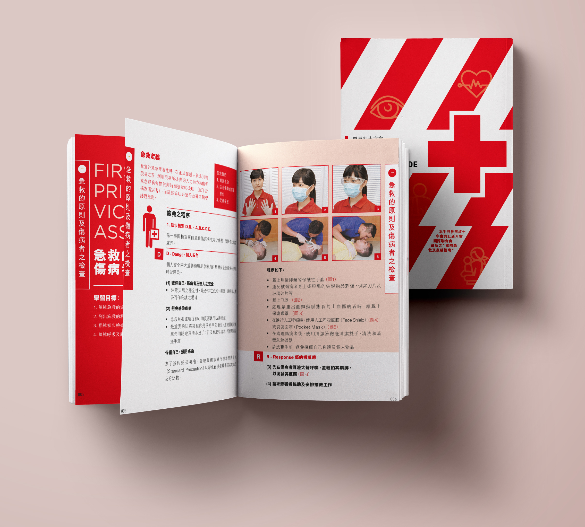

Print Media Design
I have experience designing a range of publications for various institutions, including the Red Cross, the Education University, and several art societies. What I enjoy most about print media is the freedom it gives to let information flow across a larger canvas, creating a visually engaging experience for the reader. A well-designed layout not only conveys content effectively but also brings a sense of visual enjoyment to the client.
Working with text and images, I focus on the balance of lines, shapes, and space, carefully composing each element so that the overall design feels harmonious, almost like composing a piece of music that resonates with the audience. Every detail contributes to the rhythm and flow, ensuring the final piece communicates clearly while remaining aesthetically pleasing.
